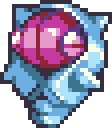
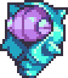

| ← #109 Frova | #110 Froshell | #111 ??? → |
|---|
| Normal Form | Corodex Description | Type |
|---|---|---|
|  | Froshell saves up most of its energy to evolve. Its ice shell protects it from damage and freezes anything that makes contact with it. |  |
| Potent Form | Locations Data | Evolution Line |
|  | - Evolve Frova | - Frova - Froshell (Level 20) - ??? (Level ???) |
| Perfect Form | Traits | |
| - Caffeinated (40/70) - Clean Retreat (30/70) |
| Stats | |
|---|---|
| HP | 55 |
| Attack | 22 |
| Defense | 27 |
| Sp. Attack | 37 |
| Sp. Defense | 35 |
| Speed | 30 |
| Skill set | |
|---|---|
| Level 1 | Scratch |
| Level 3 | Hypno Wave |
| Level 7 | Drain |
| Level 11 | Frost Web |
| Level 13 | Toughen Up |
| Level 16 | Clearing Wind |
| Level 19 | Ice Wall |
| Level 23 | Wind Blast |